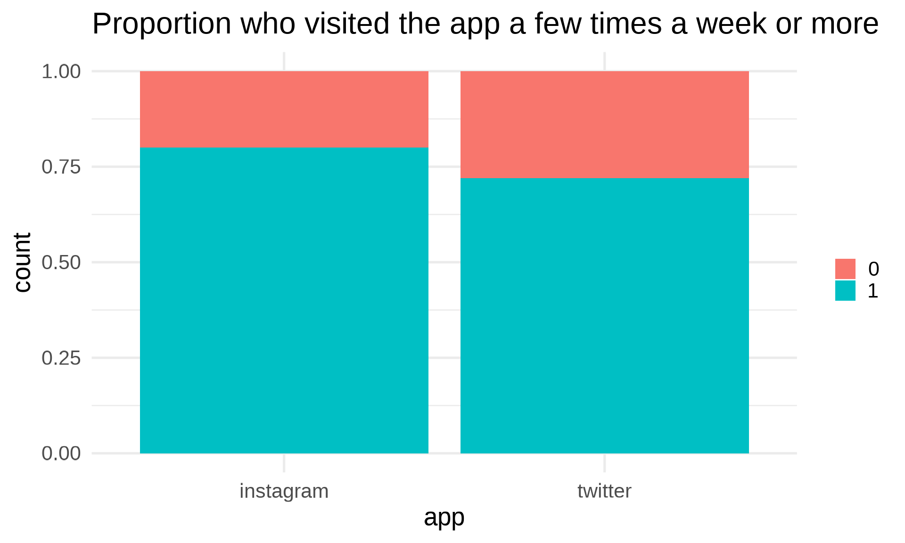
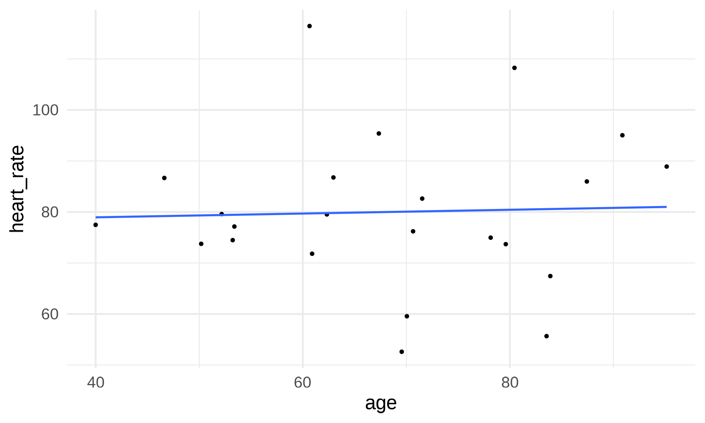
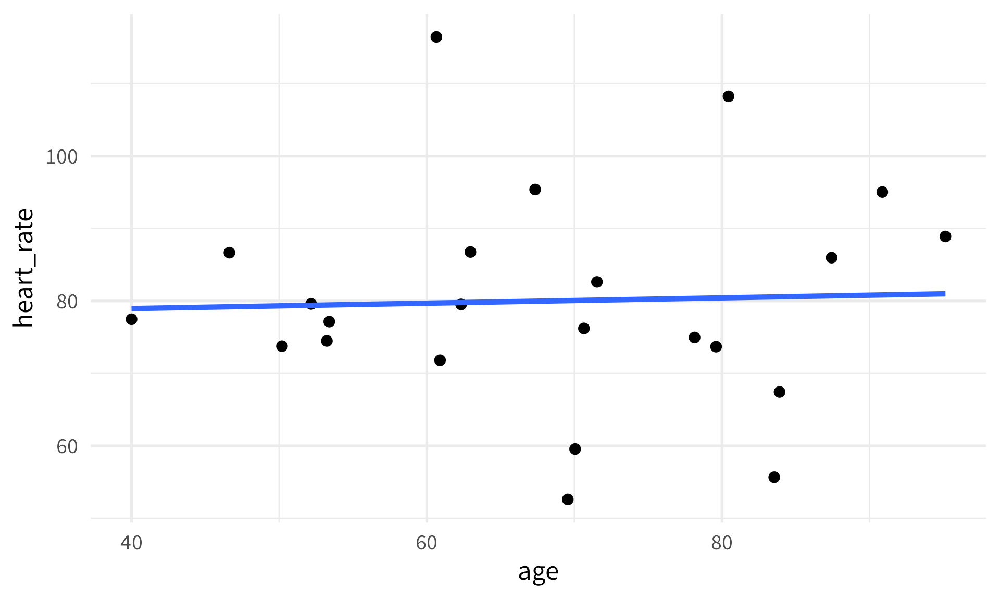
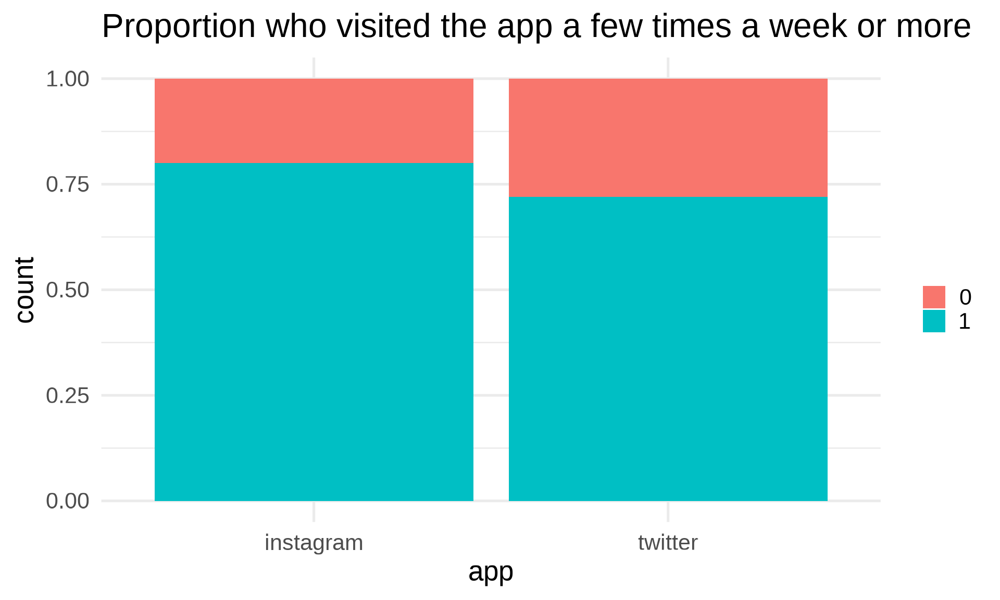
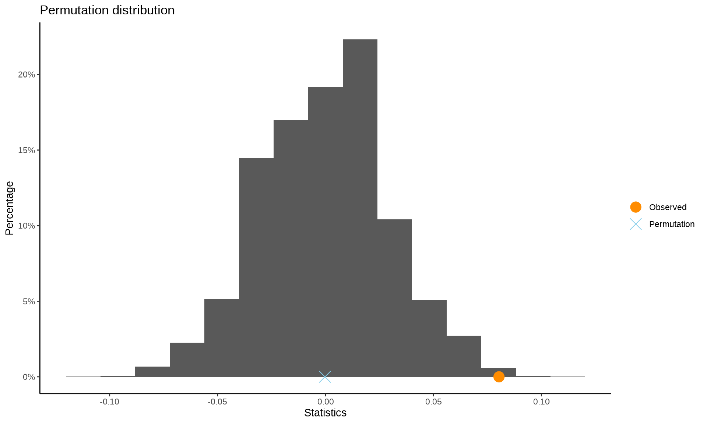
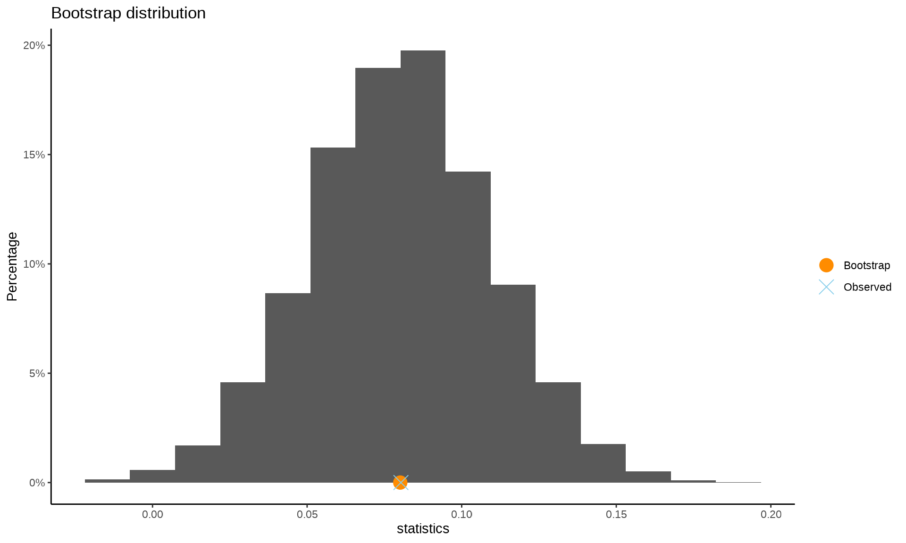
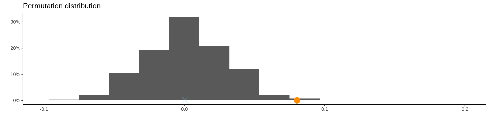
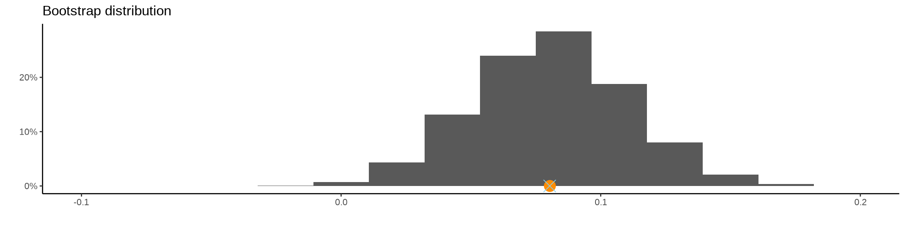

Stat120 | Fall 2025
permTest or StatKeyThere are two formal statistical decisions that we can make:
These decisions are under our control. There are also two possible “truths”
When we make a formal statistical decision, we can be wrong in two ways:
These two types of errors have different consequences, so it’s important to distinguish between them. We call the first a Type I Error and the second a Type II Error
| \(H_0\) True | \(H_0\) False | |
|---|---|---|
| Reject \(H_0\) | Type I Error |
Correct Decision |
| Do not reject \(H_0\) | Correct Decision | Type II Error |
A public health researcher believes that there is a positive relationship between heart rate and age among ICU patients. Data from 23 patients gives \(r = 0.037\).

# A tibble: 23 × 2
age heart_rate
<dbl> <dbl>
1 70.7 76.2
2 87.4 86.0
3 67.3 95.4
4 80.4 108.
5 95.1 88.9
6 60.7 116.
7 83.9 67.4
8 79.6 73.7
9 90.9 95.0
10 62.3 79.5
# ℹ 13 more rows
A public health researcher believes that there is a positive relationship between heart rate and age among ICU patients. Data from 23 patients gives \(r = 0.037\).
\(H_0: \rho = 0\) \(H_A: \rho > 0\)
If we reject \(H_0\), we could make a Type I Error and conclude there is a positive relationship when there is not. This could lead to a change in clinical practices and perhaps subjecting older patients to measures to lower their heart rate when unnecessary. This is also sometimes called a “False Positive Error”
If we fail to reject \(H_0\), we could make a Type II Error and conclude there is no relationship when there is one. This could lead to missed benefits for older patients if we fail to treat them. This is also sometimes called a “False Negative Error”
In practice, we never know if we made an error or not, but we can talk about the probability of each type of error.
\(\alpha\)
The probability of making a Type I error is \(\alpha\) (our significance level) which we get to decide.
\(\beta\)
The probability of making a Type II error is called \(\beta\), and depends on a specific value within \(H_A\)
Power
The probability of rejecting \(H_0\) when \(H_0\) is false (High power = good, low power = bad). Equal to \(1-\beta\)
A public health researcher believes that there is a positive relationship between heart rate and age among ICU patients. Data from 23 patients gives \(r = 0.037\).
\(H_0: \rho = 0\) \(H_A: \rho > 0\)
If we use \(\alpha = .05\), that means the probability that we make a Type I error is 5%.
Do you think the probability of a Type II error is higher if \(\rho = .9\) or \(\rho = .1\)?
Computing an exact value of \(\beta\) is beyond our capabilities right now, so as long as you have a sense of how \(\beta\) is impacted for different values of the parameter, you’re in good shape.
In a Pew Research Poll on social media use, 72% of Twitter users (n = 346) responded that they visited Twitter a few times a week or more. Among Instagram users (n = 530), this number was 80%. Is there a difference in frequency of use between Twitter and Instagram users?

** Permutation test **
Permutation test with alternative: two.sided
Observed statistic
instagram : 0.8 twitter : 0.7196532
Observed difference: 0.08035
Mean of permutation distribution: -0.00025
Standard error of permutation distribution: 0.02931
P-value: 0.004
*-------------*
** Bootstrap interval for difference of mean
Observed difference of mean : instagram - twitter = 0.08035
Mean of bootstrap distribution: 0.08013
Standard error of bootstrap distribution: 0.02941
Bootstrap percentile interval
2.5% 97.5%
0.02225679 0.13803032
*--------------*
A 95% percentile bootstrap interval is: [0.02266, 0.13808]
The p-value for testing \(H_0: p_I - p_T = 0\) is .004, so we reject \(H_0\).
The value under \(H_0\) (0) is not in the confidence interval, so it is not a plausible value for the parameter. Therefore, we can tell from the CI alone that we will reject \(H_0\).


Use a confidence interval when we want to summarize our “best guess” for the population parameter with sampling uncertainty.
Use a hypothesis test when there is a specific value that we want to (dis)prove.
The best part is that we’ll get the same result! If the value of \(H_0\) is outside of the confidence interval, we’ll reject it. If the value is inside the confidence interval, we’ll fail to reject it.
I find confidence intervals to be more general purpose, but you’ll typically see hypothesis tests and p-values in scientific articles.